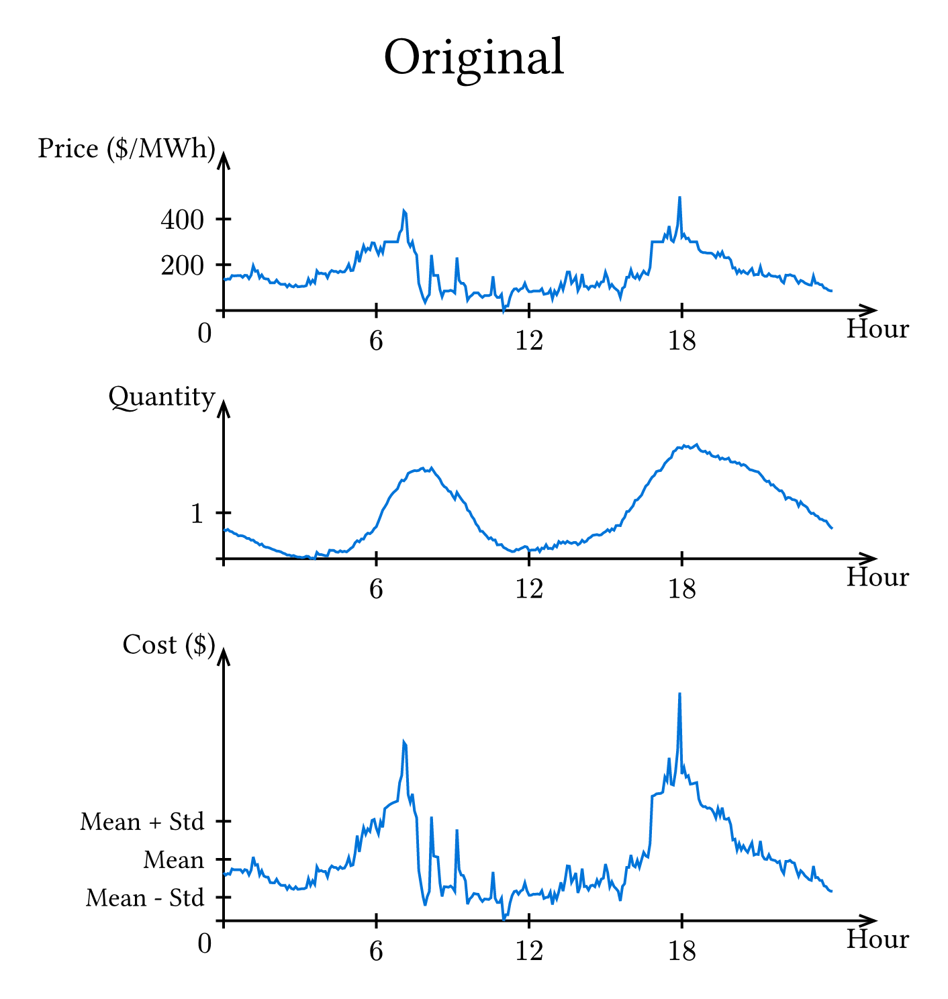
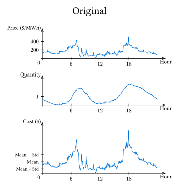

The Optimal Electricity Retail Customer Mix
How choosing a mix of low-risk and high-risk electricity customers is similar to the capital asset pricing model

Energy retailers face two main risks:
Price Risk: Retailers offer customers a fixed price, and are exposed to a variable spot price
Quantity Risk: Customers may consume more or less quantity than expected
The interaction between these two risks is crucial. For example, a retailer may invest in a solar farm to hedge long term trends in electricity spot prices. However, even if the daily volume of energy (MWh) consumed by customers equals the daily volume of energy generated by the solar farm, the retailer is still exposed to shape risk. If customers mostly consume in the evenings, after the sun has set, the solar investment cannot hedge the consumption, so the retailer is left with a short position for those hours. (This shape risk exists for other generator types, such as coal, which typically produces an output that varies within a day by less than a typical customer.)
Many businesses consume most of their power during daylight hours, when the spot price of electricity is low. A typical household may consume much of their power around dinnertime (when spot prices are high), and almost none during midday when cheap solar power is abundant, because the occupants are not home. However, a household with a remote worker may consume a greater portion of their consumption during the middle of the day, when spot prices tend to be low, thus making them more profitable for retailers (for the same retail price).
The following graphs show the price, quantity and cost for two customer types. Prices were taken for a typical day in August 2025, NSW. The "Original" load curve matches the shape of the actual aggregate demand in the region that day (normalised to a mean of 1 MW). The "Shifted" load curve is shifted by 4 hours, so that the demand peaks align with price minimums, not price maximums. This change in correlation slightly reduces the average cost, but substantially reduces the variance of the cost throughout the day. In particular, the breakfast (7am) and dinnertime (6pm) peaks are substantially smaller with the "Shifted" customer. (The same effect should apply on a longer term. A period of one day was chosen for visual clarity.) Avoiding big price spikes is a top concern for risk-averse retailers.



Suppose that retailers are able to discriminate based on these different types of customers (e.g. through targeted advertising, a front book/back book spread, bundling with other products). Some customers have consumption profiles which happen to be strongly and positively correlated with price, others are weakly correlated, and some may even be negatively correlated.
I have constructed a stylised theoretical model to examine which mix of customers is optimal. Suppose retailers choose a mix of low-risk low-return customers, and high-risk, high-return customers. The algebraic derivations are in my masters thesis. The key take-away is that the expected profit of a portfolio is linear in terms of the fraction of high vs low risk customers, and the variance of profit is quadratic. This is qualitatively the same tradeoff as for an investor in the standard capital asset pricing model (CAPM). (However, the algebra differs slightly.)
Retailers cannot easily hedge against customer quantity risk, but they can try to hedge price risk by investing in generation (which has its own quantity risk). The short and long positions (with respect to spot price) of consumers and generators complement each other more so than between customers of different types. This leads to more strongly bent pairwise frontiers in the following diagram between generator and customer than between two customer types. Generators with daily output profiles most closely matching a given customer type are the strongest hedging pairs (most bent pairwise frontiers).
The contribution of this model is to highlight the similarities between an investor choosing an optimal portfolio of assets, and a retailer targeting customers with different daily load shapes. More details are included as one section of my masters thesis.